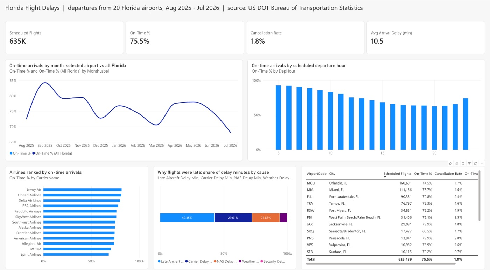

Power BI · DAX · 2026-09
Florida Flight Delays
A Power BI report on 635,459 flights leaving Florida airports: who's on time, when, and why flights run late.

The report was built in Power BI in the browser (Power BI Service) on a free USF account; the screenshot above is the real report, and the .pbix file is in the repo. The interactive version on this site is a web preview built from the same model and measure definitions, because sharing a Power BI report publicly needs a paid license.
01 — The problem
Florida has some of the busiest airports in the US, and 'is my flight going to be late?' is a question travelers, airlines and airport operators all care about. The US DOT publishes every flight's on-time record, but as about 6.5 million raw rows a year with 109 columns. I wanted a report that answers four questions quickly:
- How reliable are flights out of each Florida airport, compared with the state as a whole?
- Which airlines are most and least punctual?
- When (month, time of day) do delays happen?
- Why are flights late, and why are they cancelled?
02 — What I built
A Power BI data model and report for one year (Aug 2025 – Jul 2026) of every scheduled departure from a Florida airport:
- Star schema:
FactFlights(635,459 rows) withDimDate,DimCarrier,DimAirport(a role-playing dimension for origin and destination) andDimCancelReason. - DAX measures: On-Time %, Cancellation Rate, delay by cause, a whole-Florida benchmark that ignores the airport slicer, carrier rank, and a destination measure that uses the inactive relationship.
- A test for the report: the same measures computed independently in pandas, written out as the value every card should show.
- A web preview of the report page so it can be explored without Power BI.
03 — How it was built
- 01
Download a year of flight data
The Bureau of Transportation Statistics publishes one zip per month (about 30 MB zipped, 245 MB unzipped). Their server is slow per connection, around 40 KB/s, so one-by-one would have taken hours. Downloading all 12 months in parallel took about 5 minutes. Unfinished downloads are saved as
.partand only renamed when complete, so a cut-off file never gets treated as real data. - 02
Shape it into a star schema
From 109 columns I kept the 23 the questions need, filtered to flights departing Florida, and split them into one fact table plus four dimensions. The fact table stores keys and numbers only; names live in the dimensions. That keeps it at about 30 MB, under GitHub's 50 MB file limit, so the model ships with the repo.
The script refuses to run if an airline code appears that the carrier table doesn't know. That's better than showing a blank airline name in the report.
FactFlights ─┬─ DimDate (DateKey) ├─ DimCarrier (CarrierCode) ├─ DimAirport (OriginCode, active) ├─ DimAirport (DestCode, inactive → USERELATIONSHIP) └─ DimCancelReason (CancelCode A–D) - 03
Define every measure once, then write the DAX
The trap in this data: a cancelled flight never arrives, so it has no arrival delay. If it counted in the on-time denominator, cancellations would quietly make airports look worse, or better, depending on how the blanks were handled. So each measure got a written definition first (numerator, denominator, what's excluded), matching the US DOT's own rule, and the DAX follows that definition.
Completed Flights = [Scheduled Flights] - [Cancelled Flights] - [Diverted Flights] Late Arrivals = CALCULATE ( COUNTROWS ( FactFlights ), FactFlights[ArrDel15] = 1 ) On-Time % = DIVIDE ( [Completed Flights] - [Late Arrivals], [Completed Flights] ) Cancellation Rate = DIVIDE ( [Cancelled Flights], [Scheduled Flights] ) -- benchmark that ignores the airport slicer On-Time % (All Florida) = CALCULATE ( [On-Time %], REMOVEFILTERS ( DimAirport ) ) - 04
Test the model before building visuals
check.pyasserts the assumptions the measures rely on: unique dimension keys, no orphan keys, an arrival delay for exactly the completed flights, and cause minutes that add up to the total delay. That last one holds for 99.99% of late flights. Then it computes every measure in pandas and writesexpected_values.md: the number each Power BI card must show. It is a checklist for the report, so a wrong relationship or a blank that turned into 0 gets caught before anyone sees a chart.completed = (fact.Cancelled == 0) & (fact.Diverted == 0) assert (fact.ArrDel15.notna() == completed).all() # delay exists exactly for completed flights late = fact[fact.ArrDel15 == 1] assert (late[CAUSES].sum(axis=1) == late.ArrDelay).mean() > 0.99 - 05
A web preview computed with the same code
Publishing a Power BI report to the open web needs a Power BI Service account and a paid license, so I built a web version of the report page: an airport filter, four KPI cards, and charts by month, departure hour, airline and delay cause. Its numbers come from the same pandas function that produced the expected values, so the preview and the Power BI report agree by construction. Chart colors were checked for contrast in light and dark mode, and every chart has a table view.
- 06
Build and check it in Power BI
Built in Power BI Service in the browser, with no Windows machine. The two big tables were uploaded as CSVs; the three small ones (airlines, cancellation reasons, dates) were written as DAX calculated tables. The relationships and all 22 measures went in through TMDL view, the model's code editor, in two pasted scripts. Then
verify.daxran in DAX query view andcheck_powerbi.pycompared its output with pandas: all 184 values match. One gotcha: relationships added by script stayed empty until the model recalculated, and a free license can't refresh, so re-saving one calculated table was the trick.Then the report page: KPI cards, on-time rate by month (selected airport vs all Florida) and by departure hour, airlines ranked, delay causes as a 100% bar, and an airport table that filters the whole page when you click a row. Hour 0 (a single flight) is filtered out so it can't show a fake 100%.
- 07
Write down how to rebuild it
BUILD_IN_POWERBI.mdcovers three routes: in the browser (what was done here), by hand in Power BI Desktop, or with Claude Code plus Microsoft's Power BI Modeling MCP on a Windows laptop. Every route ends the same way: runverify.daxand check the numbers before designing anything.
04 — Results
| Measure (all Florida departures) | Value |
|---|---|
| Scheduled flights | 635,459 |
| On-time arrivals | 75.5% |
| Cancellation rate | 1.8% |
| Average arrival delay | 10.5 min (75 min when late) |
- Time of day matters most. 92% of 6 a.m. departures arrive on time, versus 63% at 8 p.m. The spread between the best and worst hour (29 points) is about twice the spread between the best and worst airline.
- Delays cascade. "Late-arriving aircraft", meaning the plane was already late from its previous flight, is the biggest cause at 42.5% of delay minutes.
- Weather cancels more than it delays. It directly causes only 5.9% of delay minutes but 59% of cancellations, two-thirds of them in January to March. November 2025's cancellations are different: mostly coded "National Air System" and clustered on Nov 7–10, which lines up with the FAA-ordered flight cuts at 40 airports that began Nov 7 during the government shutdown.
- Tampa beats the state average (78.3%, +2.9 points); Fort Lauderdale trails it (70.8%, −4.7). Among airlines, Envoy, United and Delta lead at 80–82%; JetBlue and Spirit trail at 68–70%.
05 — What I'd do next
- Add a second report page drilling into one airport: routes, carriers and the worst days.
- Add a second year for year-over-year measures (
SAMEPERIODLASTYEAR). - Add arrivals into Florida and route-level analysis (the inactive destination relationship is already in the model).